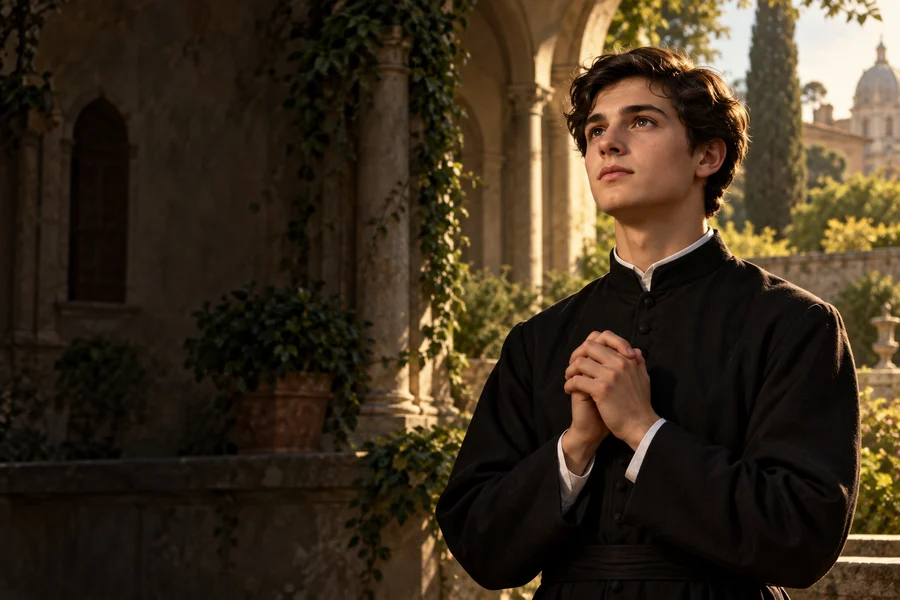

Rozpoznaj pragnienie
Zapisz decyzję, która jest dla Ciebie ważna, i nazwij powody, dla których ją podejmujesz.
1550–1568
Obchód liturgiczny: 18 września
Młody jezuita, patron Polski i młodzieży.
Młody jezuita z Mazowsza, który pokonał długą drogę do Rzymu, by odpowiedzieć na odkryte powołanie.
Poznaj historię jego życia →Dojrzewanie do własnej drogi wymaga odwagi, rozeznania oraz cierpliwej gotowości do rozmowy.
Refleksja redakcji W Modlitwie.Narodziny na Mazowszu.
Rozpoczyna naukę w kolegium jezuickim.
Wyrusza przez Niemcy do Rzymu.
Zostaje przyjęty do jezuitów w Rzymie.
Umiera 15 sierpnia w Rzymie.
Zostaje ogłoszony świętym.

Współczesne wyobrażenie artystyczne.Około 3 min czytania · 5 rozdziałów
Stanisław Kostka urodził się w 1550 roku w Rostkowie na Mazowszu, w szlacheckiej rodzinie. Wychowywał się w środowisku, które zapewniało mu możliwość nauki i przyszłej kariery. Jego życie zakończyło się wcześnie, ale decyzje podjęte w młodości sprawiły, że po śmierci stał się jedną z najbardziej znanych postaci jezuickiej tradycji w Polsce.
Rodzinny Rostków pozostał ważnym miejscem jego pamięci. Stanisław dorastał wraz z rodzeństwem i otrzymał wychowanie właściwe rodzinie szlacheckiej. Jego późniejszy wybór życia zakonnego odbiegał od planów, jakie bliscy mogli wiązać z jego wykształceniem.
W młodym wieku wyruszył z Wiednia w podróż do Rzymu. Zostawił po sobie pamięć nie o wielkich urzędach, lecz o wyborze drogi i krótkim życiu we wspólnocie zakonnej.
Jako chłopiec wyjechał z bratem Pawłem do Wiednia, gdzie uczył się w kolegium jezuickim. Tam poznawał styl życia i pracy Towarzystwa Jezusowego. Z czasem coraz mocniej pragnął do niego wstąpić. W Wiedniu ciężko chorował; w opowieściach o jego życiu pojawiają się również związane z tym okresem przekazy religijne, których nie trzeba traktować jako historycznie sprawdzalnych szczegółów.
Wiedeń był miejscem intensywnej nauki i kontaktu z jezuitami. Ciężka choroba stała się ważnym elementem późniejszych żywotów świętego. Źródła religijne opisują towarzyszące jej doświadczenia duchowe; należą one do świadectwa tradycji i nie są konieczne do ustalenia faktu jego choroby.
Rodzina nie popierała jego zamiaru wstąpienia do jezuitów. W 1567 roku Stanisław opuścił Wiedeń i wyruszył przez Niemcy w stronę Rzymu. Po drodze spotkał jezuitę Piotra Kanizjusza, który udzielił mu wsparcia. Podróż była długim i wymagającym przedsięwzięciem dla nastolatka. Jej celem było uzyskanie możliwości rozpoczęcia życia zakonnego.
W drodze do Rzymu Stanisław uzyskał pomoc Piotra Kanizjusza, jednego z jezuitów działających na ziemiach niemieckich. Podróż od Wiednia przez Niemcy i Włochy była wyrazem jego wytrwałości oraz przekonania, że powinien podjąć życie zakonne.
W Rzymie Stanisław został przyjęty do nowicjatu Towarzystwa Jezusowego. Życie nowicjusza obejmowało modlitwę, naukę i zwykłe obowiązki wspólnoty. Nie zdążył przejść całej dalszej formacji ani przyjąć święceń kapłańskich. Zachorował i zmarł 15 sierpnia 1568 roku, po niespełna roku pobytu w rzymskiej wspólnocie.
Wspólnota nowicjacka nie była miejscem samotnej realizacji planu. Kandydaci uczyli się życia razem, modlitwy i codziennej służby. Krótki pobyt Stanisława w nowicjacie sprawia, że jego historię opowiada się przede wszystkim przez pryzmat wyboru i formacji, a nie długoletniej działalności kapłańskiej.
Stanisław został kanonizowany w 1726 roku. Jest czczony jako patron dzieci i młodzieży oraz jeden z patronów Polski. Jego grób znajduje się w rzymskim kościele św. Andrzeja na Kwirynale. Historia młodego jezuity przypomina o wadze osobistego wyboru, ale także o trudnościach, jakie może rodzić różnica oczekiwań między młodym człowiekiem a jego rodziną.
W Polsce pamięć o nim żyje między innymi przez pielgrzymki młodzieży i uroczystości w Rostkowie. Określenie patron młodzieży wyraża związek jego historii z pytaniami o przyszłość i wartości. Dla czytelnika może być też zaproszeniem do rozmowy o odwadze i odpowiedzialności.
Zapisz decyzję, która jest dla Ciebie ważna, i nazwij powody, dla których ją podejmujesz.

Porozmawiaj z zaufaną osobą o wyborze, który wymaga od Ciebie cierpliwości.

Podziel trudny zamiar na małe kroki i wybierz jeden możliwy do wykonania dzisiaj.
Ojcze nasz, któryś jest w niebie, święć się imię Twoje; przyjdź królestwo Twoje; bądź wola Twoja jako w niebie, tak i na ziemi. Chleba naszego powszedniego daj nam dzisiaj; i odpuść nam nasze winy, jako i my odpuszczamy naszym winowajcom; i nie wódź nas na pokuszenie, ale nas zbaw ode złego. Amen.
Tradycyjny tekst modlitwy; utrwalony polski wariant.Ojcze nasz →